|
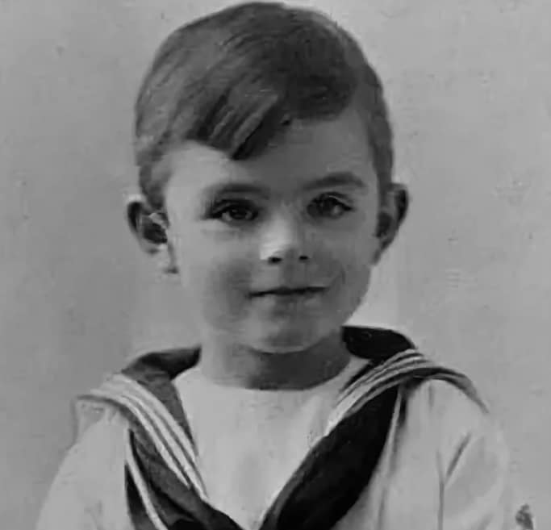 Детство |
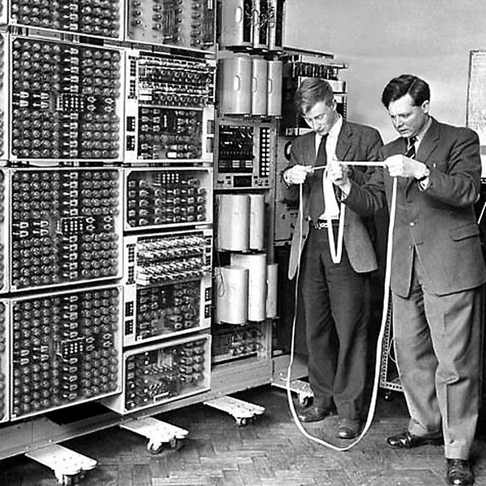 Энигма |
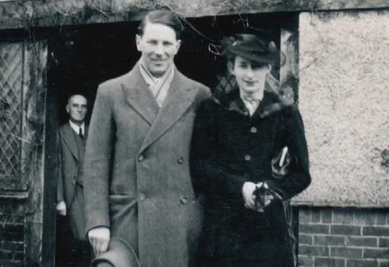 Тьюринг с женой |
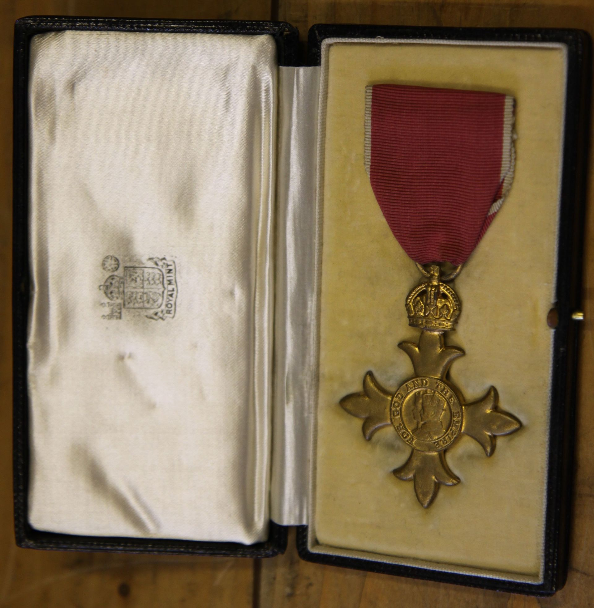 Орден |
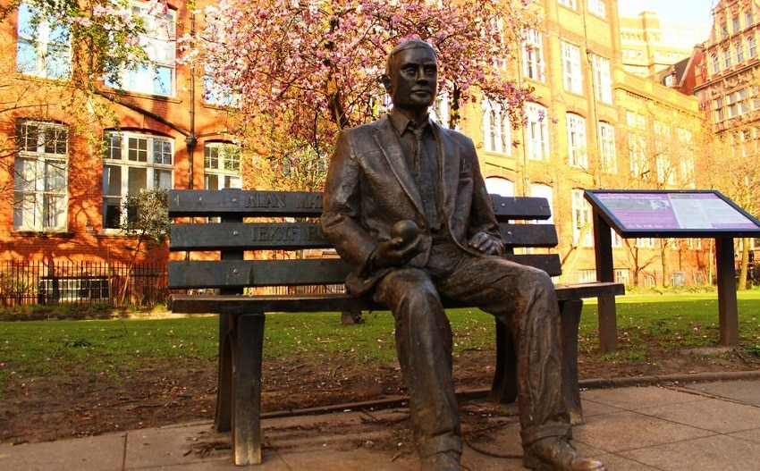 Памятник |
|
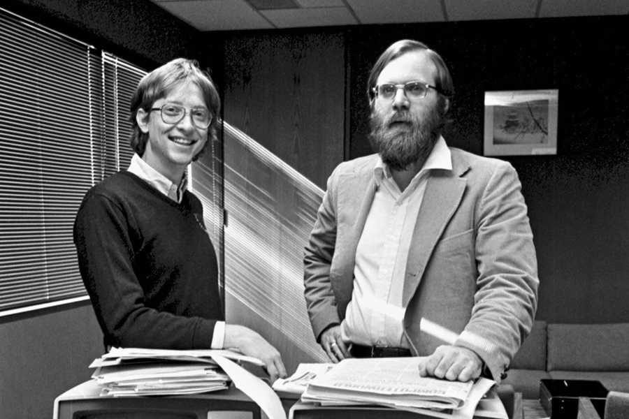 Гейтс и Аллен, 1982 |
Вручение диплома |
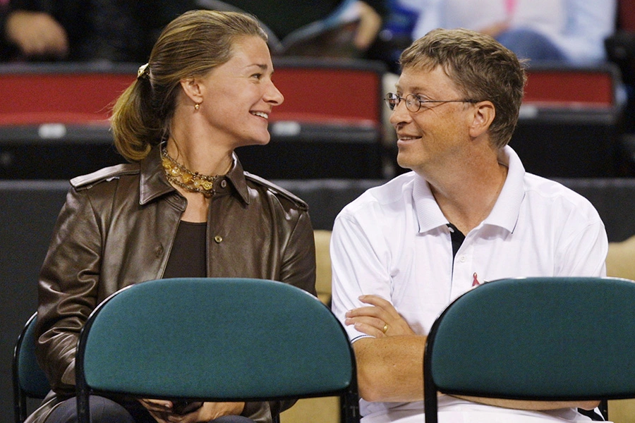 Гейтс с женой |
Благотворительный фонд |
Гейтc, 2022 |
|
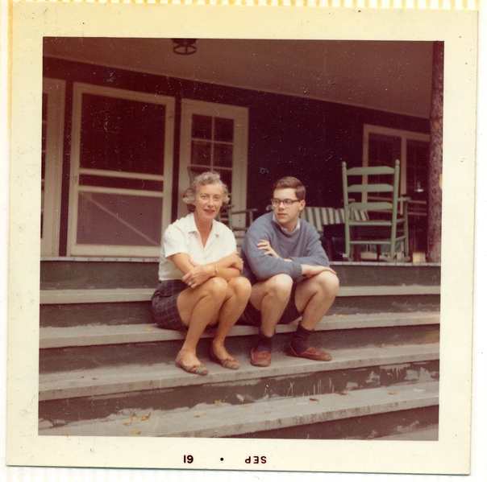 Ритчи с мамой |
 Первое руководство по Unix |
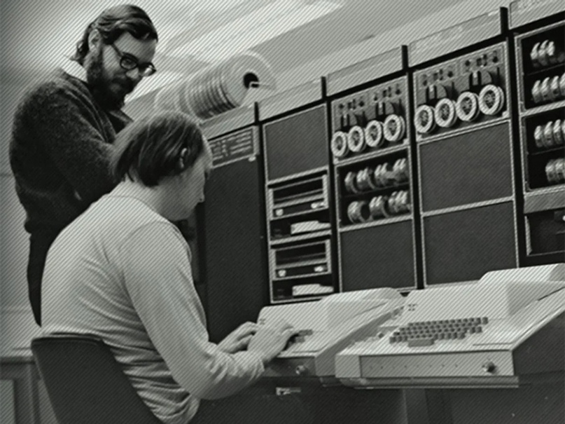 Ритчи и Томпсон, Bell Labs, 1972 |
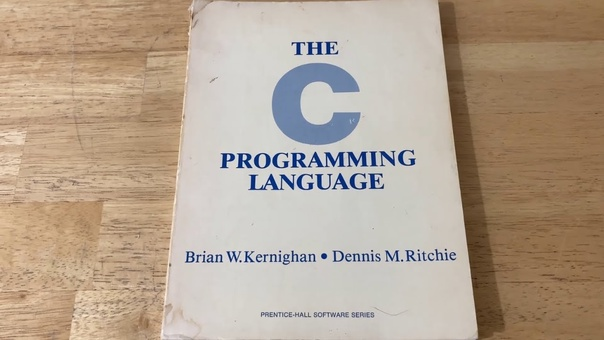 «The C Programming Language» |
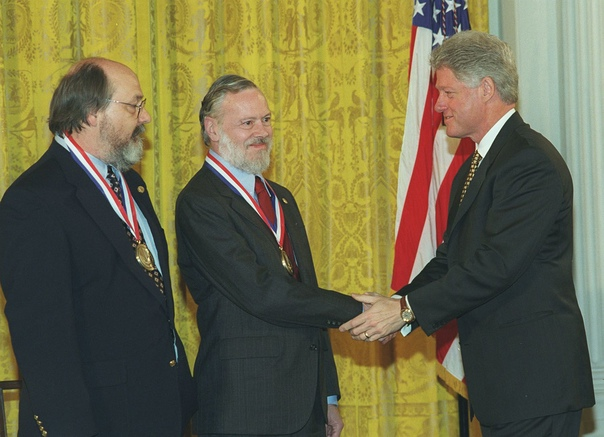 Национальная медаль США, 1998 |
 Тим Бернерс-Ли |
 Предложение по WWW, 1989 |
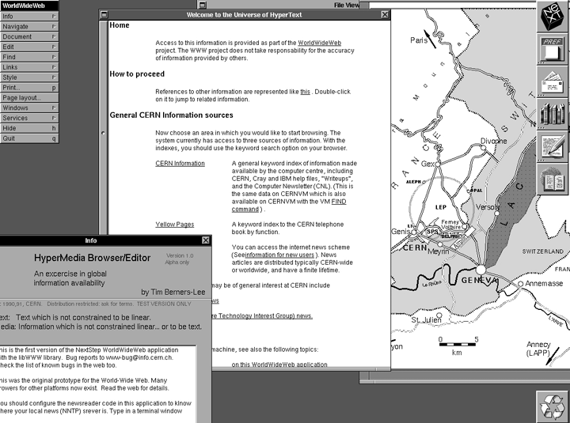 Всемирный веб-браузер Next, 1990 |
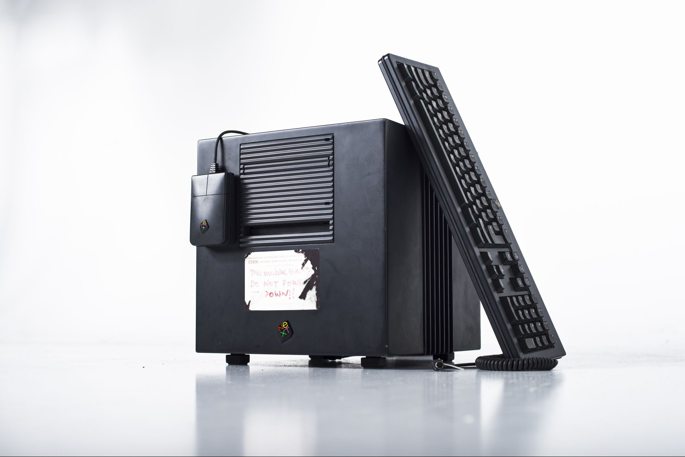 Главный сервер WWW, 1990 |
Тим Бернерс-Ли, 2017 |
|
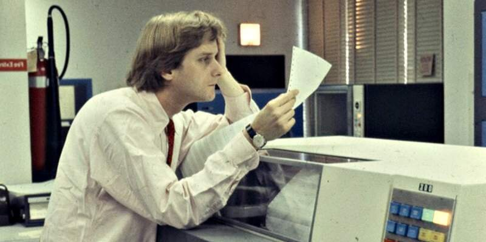 Тед Нельсон |
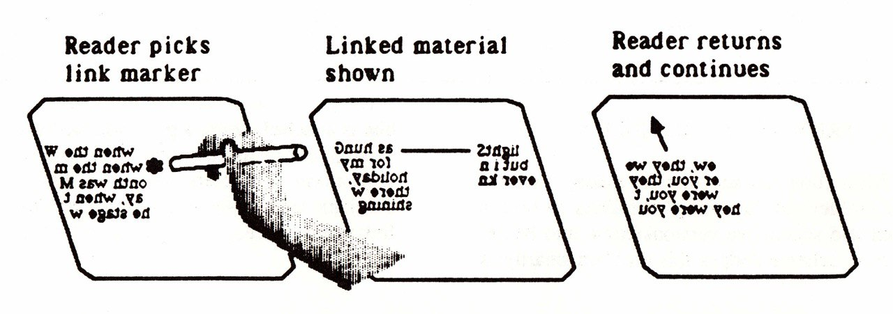 Переход по ссылке, 1980 |
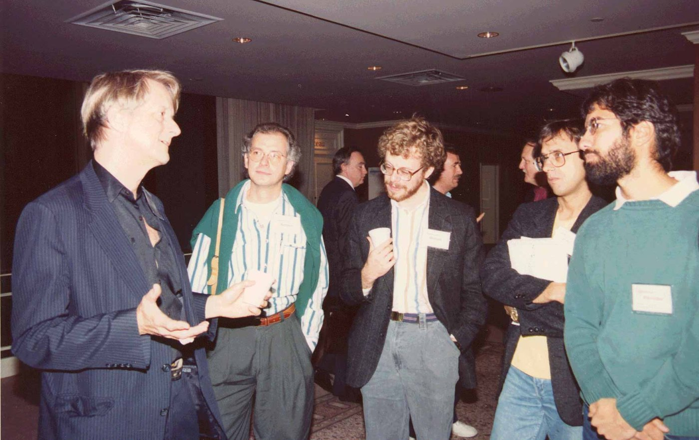 Обсуждение проекта Xanadu, 1989 |
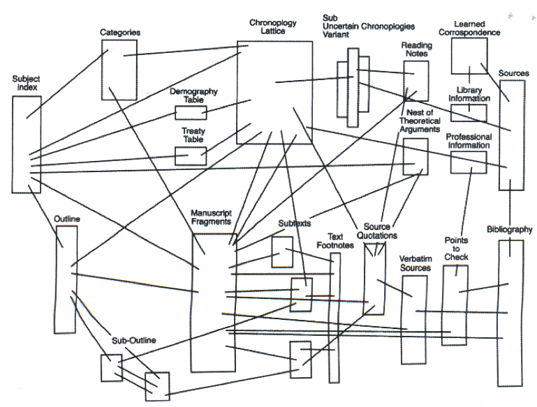 Проект Xanadu, 1960-1990 |
Автобиография «Possiplex», 2011 |